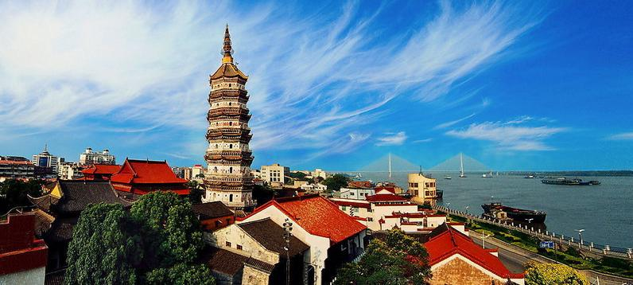
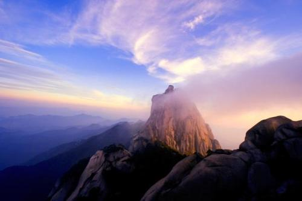
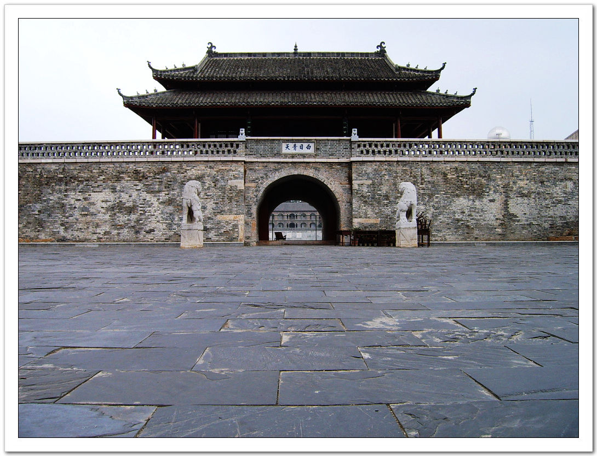

Zhenfeng Tower, located in Anqing City, Anhui Province, Yingjiang Temple, the original name of wanfu Tower, also known as Yingjiang Temple Tower, after the name "Zhenfeng", there is "To Zhenwen Feng" meaning. Zhenfeng Tower is located in Anqing City, Anhui Province, Yingjiang District along the north side of Jiangdong Road, on the edge of the Yangtze River.
The Anqing Zhenfeng Tower was built in mingmu Zonglongqing two years (1568) and built in Minglongqing four years (1570), which is one of the ancient towers along the Yangtze River. In addition to the function of the tower, the tower also has the function of navigating extradition.
（1）It's a tower in a temple；
（2）It narrows one circle every time it goes up the first floor；
（3）It has a beautiful meaning for retaining talent people.

In ancient times, because the column of heaven deep in the mountains, a peak towering, thousands of rocks, far and near the size, not around the arch worship. Therefore, when Qin and Han, the mountain is called "Hoshan". The main peak of Tianzhu Mountain is 1489.8 meters above sea level, high, straight into the clouds, such as the column of the sky, so there is the name of the column of heaven, and because it is hidden in the mountains (also: dive, ancient for the dragonfly, shaped "tip" also, righteous and Tianzhu mountain is mostly sharp, so the mountain is also known as the submersion mountain, and has a single tip, the tip of the shoots of the name.
There is also the same name as The Submarine Mountain and Wanshan. The name of Wanshan also said that because of Hanfeng Nanyue, it is also known as Long live mountain. "The county is named after the mountain, the mountain is under the name of the subliminal" (the old "Submarine Mountain City Journal"). In the spring and autumn, the Zhou Dynasty placed the country here, sealed the uncle's rule, Tianzhu Mountain belongs to the weibo sealed land, so the mountain is also known as the lushan. In order to celebrate Dr. Erbo's rule, Qingming and Dezheng, also known as Gonggongshan. As a result, Yan also became short for Anhui Province.
（1）It has bungee jumping；
（2）It has a glass walkway;
（3）You can see a very spectacular view from the top of the mountain.

According to historical records, as early as the Yuan Dynasty to the eleventh year (AD 1351), Anqing built the Tower, after Zhu Yuanzhang and Chen Youliang, the two armies were destroyed in the war; Hongwu reconstruction in the first year of the Ming Dynasty, and as a prefectural government watchtower; Qianlong years,
Anhui chief envoy moved from Jiangning to Anqing, the Chinese tower and large-scale repairs and expansion, since then has been as a division of the. The surviving towers were built by Wu Kunxiu, chief envoy of Anhui, in the sixth year of the reign of Emperor Tongzhi of the Qing Dynasty (AD 1867).
（1）It is the place where the ancient city examination was taken；
（2）Behind it is a high school with more than 100 years of history；
（3）It is located in what was once a French concession.
